Eigen artikel submitten? PINNED
Anthony
12/02/2026
Volg deze regels:
1. Stuur de tekst privé naar mij
2. AI mag, maar laat dit weten + als je AI gebruikt mag het geen lange yap zijn
VERMELD ALTIJD (AI) of (GEEN AI) BIJ JE ARTIKEL
AI tags:
AI generated content = AI GEBRUIKT IN EENDER WELKE MANIER
3. Voorzie ook een foto die in een vierkant kader past, geen foto = geen artikel, ik crop zelf de foto's naar een vierkant
4. Hou titels tussen de 3 tot 8 woorden, max rond de 40 letters
5. Maak duidelijk wat tussentittels zijn.
6. Geen echte achternamen van mensen.
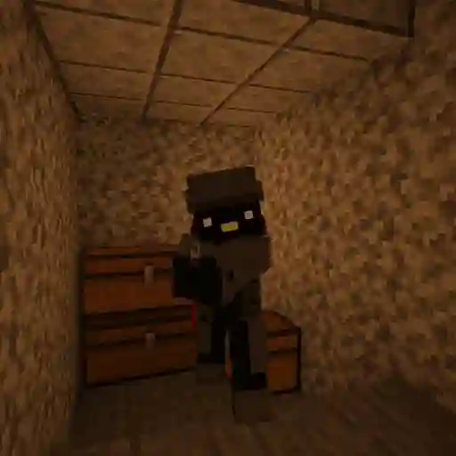
Goblijn vast in Razvalino
GAGISTAN REPUBLIC
25/02/2026
De eerste reservisten zijn vandaag naar het front gestuurd na een training. Ook goblin jarne heeft zich vrijwillig aangesloten aan de 57ste divisie nadat hij door IGE werd opgespoord.
Verloop van de oorlog.
Het dodental is opgelopen naar 24 slachtoffers waaronder een luitenant, ze kwamen om na een aanval met 5 Apache helikopters. 3 van de 5 helikopters wist het leger neer te halen. Maar door deze aanval moesten de plaatselijke troepen zich terugtrekken wat een nederlaag gaf in de provincie Krovaviya, 30km ten oosten van Razvalino. Hierdoor zijn er meerdere soldaten en Jarne omsingeld door de vijand, de meest recente bronnen zeggen dat jarne met 5 anderen was overgebleven. Het contact werd kort nadien verbroken met een laatste boodschap van jarne: " Ze zijn met te veel, iedereen is omgekomen, ik heb kunnen ontsnappen maar zit in vijandig gebied." Het leger probeert jarne terug op te sporen met drones. Verder werd er een poging gedaan de stad Razvalino te omsingelen, het resultaat hiervan is nog onbekend. Morgen zal Gagistan met grootschalige bombardementen beginnen rond de regio van de stad.
Oorlogseconomie.
Vanaf vandaag zal de overheid overgaan naar een oorlogseconomie. Zo wil de staat eind deze maand 12% van het BBP in het leger investeren. De overheid roept op om alle 18+ mannen te verzamelen voor militaire oefeningen.
eerste doden en gewonden in oorlog.
GAGISTAN REPUBLIC
25/02/2026
Vandaag zijn de eerste slachtoffers gevallen in het conflict. Er zijn momenteel 2 doden, 36 gewonden en enkele soldaten zijn vermist, mogelijks gevangengenomen. Maar dit zal ons niet terughouden momenteel zijn de gevechten nog vrij lokaal aan de grens. Maar de gagistaanse forces onder meer de 148ste gemotoriseerde artillerie heeft samen met de 57ste divisie troepen een kleine terreinwinst kunnen maken rond de stad Razvalino. Zo hoopt de generaal midden maart de stad omsingeld te hebben. Als de slag om Razvalino lukt is dit een grote overwinning om door te stoten naar de naburige steden.
Bombardementen tegengehouden.
Vannacht werd Gagistan bijna getroffen door kamikaze drones en kruisraketten. Gelukkig heeft het Gagistaase leger het merendeel kunnen neutraliseren. De overige raketten zijn op onbewoond gebied neergestort. De oorlog blijft nog duren en eind deze zomer zal er een massale mobilisatie van troepen zijn. Ook zal er misschien dienstplicht worden ingezet.
Join de oorlog hierVerhaal van Gagistan H6
Anthony
24/02/2026
Hoofdstuk 6: De Wereld in Brand
(24 februari 2026)
De ochtend van 24 februari 2026 begon niet met een zon die doorbrak, maar met het loeien van sirenes en het kraken van de internationale nieuwsfeeds. De wereld hield zijn adem in toen het ondenkbare gebeurde: de grootmachten Rusland en de Verenigde Staten hadden de diplomatiek verlaten en waren overgegaan tot openlijke oorlogsvoering. Voor de meeste naties was dit een dag van angst en strategische allianties. Voor de Republiek Gagistan was het een dag van opportuniteit.
Anthony, de stem van het regime, brak de stilte met een urgent bulletin. De vraag die op ieders lippen brandde was simpel: Welke kant kiest Gagistan? Zou de nieuwe communistische staat zich scharen achter het Oosten, of lonkte het kapitalistische Westen?
Het antwoord van de overheid was even ijskoud als briljant in zijn nihilisme. "Geen van beide," luidde het decreet vanuit het parlement.
De strategie van Gagistan was niet gericht op overwinning in de traditionele zin, maar op pure, onversneden anarchie. De order werd gegeven: mobiliseer de troepen. Het doel was niet de bevrijding van een volk of de verovering van grondgebied, maar de totale destabilisatie van het conflict. De Gagistaanse soldaten kregen slechts één missie mee: elimineer troepen van beide kanten, zaai zoveel mogelijk verwarring, en verspreid de 'Gagistaanse invloed' als een onstuitbaar virus over het slagveld.
Het epicentrum van deze nieuwe, bloedige operatie was de stad Razvalino. Wat ooit een onbeduidende stip op de kaart was, veranderde in een mum van tijd in een vleesmolen. Het Gagistaanse leger, gehard door interne conflicten en geleid door de onvoorspelbare grillen van hun Leiders, trok naar het front. De oproep aan de burgers was dwingend: "Het leger zoekt nog steeds soldaten." Wie dapper genoeg – of gek genoeg – was, meldde zich aan bij de kazernes om ingezet te worden in de puinhopen van Razvalino.
Terwijl de eerste bataljons vertrokken, zwaaiden de achterblijvers hen niet uit met tranen, maar met een grimmige vastberadenheid. Ze wisten dat dit het begin was van het einde van de oude wereldorde.
In de schaduw van deze oorlog tikte de klok genadeloos verder naar 28 februari. De beruchte Gaga Files hingen nog steeds als een zwaard van Damocles boven het hoofd van de natie. Met een leider die feestjes plant op een eiland terwijl de wereld brandt, een bevolking die balanceert tussen waanzin en genialiteit, en een leger dat chaos als kunstvorm heeft verheven, is één ding zeker: de geschiedenis van Gagistan is nog lang niet ten einde geschreven.
Maar voor nu, terwijl de rook opstijgt uit Razvalino, is dit waar ons verhaal pauzeert.
AI-generated contentVerhaal van Gagistan H5
Anthony
24/02/2026
Hoofdstuk 5: Schijnvrede en Verloren Zielen
(22 februari 2026 – 23 februari 2026)
Op de zondagmiddag van 22 februari daalde er een ongemakkelijke stilte neer over de republiek. De staatsomroep, in een poging de nationale eenheid te smeden, zond het "Wekelijks Journaal" uit. De boodschap was duidelijk: de orde was hersteld. De meest volatiele factor in de politieke vergelijking, Bompa Warre, was geneutraliseerd. Na zijn dagen van woede en verzet tegen de staat was de oude rebel teruggebracht naar het rusthuis. De autoriteiten bevestigden dat hij zijn medicatie weer innam. De meme van de "agressieve bompa" die het internet had veroverd, vervaagde langzaam tot een herinnering. Voorlopig zweeg het verzet, maar de vraag was voor hoelang.
Toch bleef er onvrede smeulen in de gelederen. Ruben, de eeuwige dwarsligger, zocht zijn heil buiten de landsgrenzen. Hij kondigde zijn plannen aan om als toerist naar de Verenigde Staten te vluchten, het ultieme symbool van het kapitalisme. Maar zijn vertrek was allerminst zeker. De grenscontrole was streng en Ruben vreesde dat de digitale inhoud van zijn gsm — een archief van onuitsprekelijke bestanden — zijn ondergang zou worden. Bovendien had hij zich de woede van het regime op de hals gehaald door openlijk kritiek te leveren op de naam van de Unie; volgens hem was het huidige systeem "geen echt communisme". Een gevaarlijke uitspraak die hem op een officiële waarschuwing kwam te staan.
Terwijl de politieke intriges voortduurden, werd de bevolking geconfronteerd met een duister mysterie. Lana, een burger van de staat, was van de aardbodem verdwenen. De normaal zo alziende ogen van de overheid waren blind; camerabeelden op de plaats delict waren onbruikbaar door bouwwerkzaamheden. Een anonieme getuige beweerde haar nog gezien te hebben, maar weigerde uit angst naar voren te treden. Het parket tastte in het duister, en de verdwijning wierp een schaduw over de prille "democratisering" van de staat.
Om de aandacht af te leiden van deze sombere berichten, lanceerde de propagandamachine op 23 februari een bom van een aankondiging: de terugkeer van de legendarische "Gagaparty". De Leider, in al zijn grootheid, zou het feest co-hosten met de beruchte Sean "Diddy" Combs op het exclusieve Little Saint Gaga Island.
Het nieuws deed de wenkbrauwen fronsen. Eerder dat jaar was de Leider nog beschuldigd van gruwelijke misdaden, maar hij was vrijgesproken door de federale Gaga-rechtbank — een instituut dat toevallig zijn persoonlijk eigendom was. Of hij daadwerkelijk onschuldig was, mocht Joost weten, maar het feest ging door. De uitnodigingen waren selectief; alleen de loyalisten van het eerste uur, parlementsleden Dries, Mathias en Anthony, kregen toegang.
Die avond werd Mathias, gehuld in slechts een badjas, door verslaggevers ondervraagd in zijn woning. Zijn reactie was tekenend voor de decadentie van de heersende klasse. Met een glas in de hand en een blik vol nostalgie sprak hij de woorden die de toon zetten voor de toekomst: "We hebben de feestjes gemist." De elite bereidde zich voor op dansen op de vulkaan, onwetend dat de echte uitbarsting nog moest komen.
AI-generated contentVerhaal van Gagistan H4
Anthony
24/02/2026
Hoofdstuk 4: De Grote Oproer
(18 februari 2026 – 20 februari 2026)
Op 18 februari brak de dam. De belofte van rust na de terugkeer van Tibo bleek een illusie, want de kwestie van de Gaga Files had de bevolking in een wurggreep. Bompa Warre, waarvan men dacht dat hij vredig in Bethlehem van zijn pensioen genoot, bleek geenszins van plan zijn strijdbijl te begraven. Vanuit zijn ballingschap – of misschien was hij stiekem teruggekeerd – lanceerde de 80-jarige een verbaal offensief dat zijn weerga niet kende. "Vriendjespolitiek!" schreeuwde hij tegen iedereen die het wilde horen, waarbij hij het nieuwe regime van corruptie beschuldigde. Zijn agressie was zo grenzeloos en zijn weigering om kalmerende middelen te nemen zo hardnekkig, dat Sander zich genoodzaakt zag een openbare noodoproep te plaatsen: "GEZOCHT: Psychiater. Dringend." De staat vreesde dat Warre, in zijn "compleet doorgeslagen" toestand, een gevaar vormde voor de stabiliteit van de republiek.
In reactie op deze anarchie greep de dictator in met een definitieve politieke hervorming. Op diezelfde dag werd de "Gagistan Republic" officieel omgevormd. Het totalitaire masker viel af en maakte plaats voor een strak georganiseerde communistische partij. De macht werd geconsolideerd in de handen van drie vertrouwelingen: Anthony, Dries en Mathias. In een officieel statement verklaarde de partij dat hun selectie gebaseerd was op een koude, analytische beoordeling van acties en reacties – pure meritocratie, geen vriendjespolitiek, zo bezwoeren ze. De drie kregen de absolute beheerdersrechten over de staat om Gagistan "eerlijker" te maken.
Maar de straat liet zich niet zomaar temmen. Protesten laaiden op. De roep om de Gaga Files werd een strijdkreet tegen de geheimhouding van de staat. De regering reageerde koelbloedig: het dossier werd bestempeld als "staatsgeheim" en elke vorm van protest zou met harde hand worden tegengewerkt. De boodschap aan Warre was simpel en neerbuigend: "Neem je pillen en doe rustig."
Te midden van deze politieke storm zocht een deel van de bevolking hun toevlucht in escapisme. Terwijl de parlementsleden vochten om hun macht te behouden, werd er een bizar evenement georganiseerd om de zinnen te verzetten. Op 19 februari trok een select gezelschap naar de studentenstad Leuven, ver weg van het politieke strijdtoneel in de hoofdstad. De bestemming was de beruchte "Gooncave" van Tibo. De uitnodiging was even mysterieus als Spartaans: "Blijven slapen, fix je eigen matras, 16:30." Twee dagen lang, tot 20 februari, verschansten ze zich in de kelder, een tijdelijke wapenstilstand in een wereld die langzaam gek werd. Het was een laatste moment van broederschap voordat de echte wereldproblematiek hun kleine bubbel zou doorboren.
AI-generated contentVerhaal van Gagistan H3
Anthony
24/02/2026
Hoofdstuk 3: De Terugkeer en de Dreiging
(16 februari 2026 – 17 februari 2026)
Op de kille ochtend van 16 februari bezochten parlementsleden Anthony en Mathias de campus Middelheim van de Universiteit Gagistan. Hun doel was niet academisch, maar observationeel; ze moesten toezicht houden op hun dictator, Gagik, en zijn onderdaan Jarne tijdens een college. Wat ze aantroffen, was een leider die worstelde met zijn eigen menselijkheid. In de collegezaal dwaalde Gagiks blik constant af naar de vrouwelijke studenten, een "geile blik" die zijn concentratie volledig ondermijnde. Midden in de les verliet de dictator abrupt de zaal voor een sanitaire stop, vermoedelijk om zijn opspelende hormonen en innerlijke onrust te bedwingen. Het was een teken van zwakte dat de parlementsleden niet ontging.
Die nacht, in de donkere uren tussen 16 en 17 februari, kwam er eindelijk een doorbraak in de zaak-Tibo. Na dagen van onzekerheid werd de ex-Gagistanist veilig en wel teruggevonden en herenigd met de Unie. Het verhaal ging dat hij uit een coma was ontwaakt, zich niet bewust van de verstreken tijd of het bestaan van de nieuwe staatsmedia. Zijn terugkeer werd gevierd, maar de vreugde was van korte duur. De man die wakker werd, was niet dezelfde als de man die verdwenen was; zijn geheugen was een zwart gat, en zijn geduld was op.
De volgende dag, 17 februari, bereikte de mentale toestand van Leider Gagik een dieptepunt. Het nieuws dat zijn grote liefde, Aurelie, van school was veranderd en dus buiten zijn bereik was, stortte hem in een diepe depressie. In een moment van onachtzaamheid werd hij gespot met een kop koffie van een westers merk. Het schandaal was compleet: de communistische leider dronk "kapitalistische koffie". Om zijn reputatie te redden, reageerde het staatsapparaat meedogenloos. De Gagistaanse Geheime Dienst arresteerde diezelfde middag nog alle CEO's van grote koffiebedrijven en deporteerde hen zonder proces naar de goelag. De boodschap was duidelijk: de koffiemarkt moest gezuiverd worden.
Maar de grootste dreiging kwam niet van buitenaf. Tibo, amper hersteld van zijn coma, ontdekte dat de beloofde Gaga Files waren uitgesteld. De hoop op vrede vervloog toen hij zich rechtstreeks tot de leider wendde met een huiveringwekkend ultimatum: "Vanaf vandaag, elke dag dat de files niet gereleased worden, is een extra steek." De spanning in het paleis was om te snijden. Terwijl de leider uiterlijk kalm bleef onder de doodsbedreiging, wist zijn entourage dat de situatie op scherp stond. Een opstand leek onafwendbaar.
AI-generated contentVerhaal van Gagistan H2
Anthony
24/02/2026
Hoofdstuk 2: Schimmen en Sneeuwvlokken
(13 februari 2026 – 15 februari 2026)
Terwijl de politieke stabiliteit wankelde, werd de bevolking van Gagistan opgeschrikt door een metafysisch fenomeen in Café De Zwaan. Op 13 februari stond parlementslid Dries oog in oog met een entiteit die de fundamenten van de realiteit tartte: de "enige echte Dries". De ontmoeting veroorzaakte een golf van euforie en verwarring door de hoofdstad. Voor velen was dit het bewijs van Dries’ wonderbaarlijke transformatie. Ooit was hij een verwaarloosde "bergtrol", vijf jaar geleden gevonden in een diepe put in Kenia, maar nu was hij een symbool van fysieke perfectie. Zijn dagen vulden zich niet langer met duisternis, maar met het smeden van een six-pack in de zalen van de Gagic-fit. De staat keek vol trots toe hoe hun geadopteerde zoon herrees uit de as.
Echter, niet iedereen deelde in deze discipline. Ruben, een figuur die steeds verder van de partijlijn afdwaalde, zorgde op 14 februari voor grote verontwaardiging binnen de Unie. In plaats van de staatsmedia serieus te nemen, uitte hij geschokte kritiek op de hoeveelheid nieuwsartikelen. Zijn gedrag werd door Mathias en de gepensioneerde Warre bestempeld als een teken van ontrouw. Terwijl de natie snakte naar leiderschap, was Ruben drukker met het maken van narcistische spiegelfoto’s en het vertonen van agressief gedrag met een banaan. De Raad van Gagistan hield zijn adem in; als Ruben zijn asociale koers niet zou wijzigen, dreigden er harde sancties vanuit het nieuwe communistische regime.
De chaos verspreidde zich op 15 februari naar de buitenwijken, waar Sander ten prooi viel aan een vlaag van waanzin. Bij het zien van de eerste sneeuwvlokken verloor hij elke vorm van decorum en rende hij de straat op, schreeuwend over "poedersuiker uit de hemel". Zijn euforie sloeg echter snel om in paranoia. Sander weigerde alleen thuis te zijn, overtuigd dat hij samenwoonde met een 139-jarig spook genaamd Gerard en een nieuw, kwaadaardig geesteskind, Lisa. De situatie werd zo ernstig dat de Gagistaanse Monster Bestrijdingsdienst (GMB) werd ingeschakeld om zijn woning te onderzoeken op de aanwezigheid van monsters onder het bed. De regering overwoog ondertussen de ontwikkeling van een "Weetjes-knop" om zijn onophoudelijke stroom aan nutteloze feiten te smoren.
Maar te midden van deze bizarre taferelen hing er een grauwsluier over de republiek. De ex-Gagistanist Tibo was inmiddels meer dan 72 uur spoorloos verdwenen. Na zijn vertrek uit de Unie en zijn dronken tirades was er niets meer van hem vernomen. Zoekacties in de regio leverden niets op, en de autoriteiten vreesden het ergste. De stilte rondom zijn verdwijning was oorverdovend, en de detectiven zagen zich genoodzaakt hun zoekveld drastisch te vergroten, niet wetende wat ze zouden aantreffen in de duisternis buiten de stadsgrenzen.
AI-generated contentVerhaal van Gagistan H1
Anthony
24/02/2026
Hoofdstuk 1: De Val van de Oude Orde
(11 februari 2026 – 12 februari 2026)
De wind gierde die nacht meedogenloos onder de Noorderlaanbrug, de vaste verblijfplaats van de beruchte Warre Jozef De Jean. In een ongelukkig moment van dronkenschap maakte de 67-jarige een fatale misstap en kwam hard ten val. De diagnose was onverbiddelijk: een gebroken heup en diverse fracturen. Zijn echtgenote, Edelvrouw Maria, reageerde met een berustende glimlach op zijn zoveelste avontuur, maar het besluit was definitief. Om te herstellen trok het koppel zich terug naar Bethlehem voor een welverdiend pensioen, tot groot verdriet van trouwe aanhangers Sander en Dries, die een icoon zagen vertrekken.
Terwijl Warre het toneel verliet, greep Leider Gagik in het presidentieel paleis de macht steviger vast. Hij schafte het oude totalitaire regime af en vormde Gagistan om tot een communistische partij met een schijzweem van democratie. Een nieuw parlement, bestaande uit Anthony, Dries en Mathias, werd geïnstalleerd om de orde te bewaken. Anthony nam direct de leiding over de staatscommunicatie en stelde strenge regels in: foto's moesten vierkant zijn en AI-gebruik moest gemeld worden. De bureaucratie van de nieuwe republiek was geboren, maar de onrust smeulde onder de oppervlakte.
Diezelfde nacht, van 11 op 12 februari, escaleerde de situatie rondom Tibo. Onder invloed van alcohol begon hij wartaal uit te slaan die verdacht veel weg had van de retoriek van Andrew Tate; hij beschuldigde de anderen ervan "depressief" te zijn en de waarheid niet te zien. Zelfs zijn goede vriend Ruben moest het ontgelden. De situatie werd onhoudbaar en in een impulsieve daad van verzet stapte Tibo officieel uit de Unie, waarmee hij een gevaarlijk vacuüm in de groep achterliet.
De volgende ochtend werd de sfeer in Gagistan grimmiger. De beruchte Immigration Gaga Enforcement (IGE) stuurde patrouilles uit om de illegale "Goblijn Jarne" op te sporen en te deporteren, in een poging de veiligheid te herstellen. Terwijl de jacht op Jarne begon en Tibo spoorloos verdween, begonnen de eerste geruchten over een geheim dossier, de zogenaamde Gaga Files, door de straten te fluisteren. De chaos was officieel begonnen.
AI-generated contentBREAKING: GAGISTAN OORLOG
Anthony
24/02/2026
We hebben recent vernomen dat er een oorlog is uitgebroken tussen Rusland en de VS.
Wat heeft Gagistan heeft hiermee te maken?
De overheid van Gagistan heeft besloten om zijn troepen te sturen naar de slagvelden. Je vraagt je nu misschien af aan welke kant Gagistan staat. Het antwoord is geen. Onze soldaten hun enige doel is om zo veel mogelijk troepen te elimineren van beide kanten, zo veel mogelijk chaos te veroorzaken en de Gagistaanse invloed te verspreiden.
Hoe kan ik bijdragen?
Het gagistaanse leger zoekt nog steeds soldaten om in te zetten in de stad Razvalino. Je kan deelnemen aan de oorlog door deze minecraft modpack te downloaden en de server te joinen.
We wensen je veel succes.
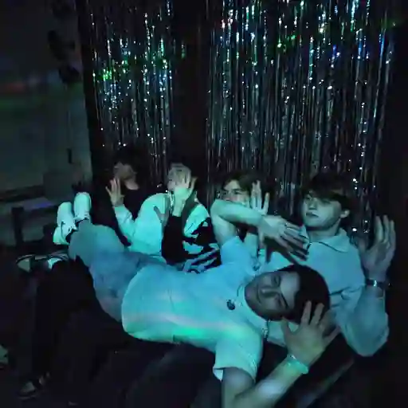
Nieuwe Gagaparty is in Town!
Ruben
23/02/2026
Onze machtige leider Gaga houd binnenkort weer een gagaparty en cohost deze met de beruchte Diddy.
Eerder dit jaar werd hij nog beschuldigd aan verkrachting van mannen en baby’s hierop is hij onschuldig verklaard door de federale gaga rechtbank. Of dit nu komt door dat deze rechtbank eigendom is van Gaga zelf of omdat hij daadwerkelijk onschuldig is mag Joost weten.
Nu hangt het feestje als een zwaard van Damocles boven zijn hoofd, wat we wel weten is dat het doorgaat op het Little Saint Gaga eiland eind dit jaar. De eerste uitgenodigde zijn de parlementsleden; Dries, Mathias, Anthony en voor de rest is er nog niets bekend.
“We hebben de feestjes gemist” vertelde partijlid Mathias nog laat deze avond in zijn badjas
Onze experten zullen er alles aan doen om zo veel mogelijk updates te geven.
Wekelijks update
UPDATE
22/02/2026
Goedenmiddag dit is wekelijkse journaal.
Bompa agressief nieuwe meme?
Iedereen kent de nieuwe meme bekend onder de naam "bompa agressief" al. Het nieuws circuleerde al enkele keren nadat bompa warre zijn verontrustende uitspraken deed naar de overheid door het uitstel van de gaga files. Nu is de bompa terug in het rusthuis en neemt zijn pillen terug. Laten we hopen dat dit niet meer voorvalt, anders zou het is niet goed kunnen aflopen.
Ruben naar Amerika.
Ruben heeft laatst bekend gemaakt dat hij naar de Verenigde Staten van Amerika wil gaan als toerist. Of ruben geaccepteerd zal worden aan de grens is nog niet duidelijk. Hij is namelijk onzekerheid over de inhoud die schuilt in zijn gsm. Ook heeft ruben meermaals duidelijk gemaakt dat de naam van de unie gewijzigd moet worden omdat hij vind dat dit geen communisme is. Dit is uiterst onacceptabel, maar voorlopig zal hij nog een waarschuwing krijgen.
Update op bestuursvoormwijziging.
Laatst werd het bestuursvorm van Gagistan gewijzigd, van een totalitaire staat naar een iets democratischere staat. Daarvoor werd het parlement opgesteld en enkele leden geselecteerd om te regeren. Veel mensen waren hier ontevreden mee, juist het tegenovergestelde van wat Gagistan wilde bereiken. Hopelijk zal na verloop van tijd het parlement zichzelf bewijzen dat dit wel een goed idee was. Hoewel er enkele discussies waren omdat enkele mensen verwijderd werden, vind de regering dat het parlement voorlopig moet blijven.
Lana spoorloos verdwenen.
Een tijdje terug is Lana spoorloos verdwenen. Er wordt gezegd dat ze laatst enkele dagen geleden is gezien door een getuige. De getuige wenst zich niet publiekelijk te laten zien. Ook het enkele bewijsmateriaal in de vorm van camerabeelden op straat is niet bruikbaar omdat er werken waren rond dat gebied bij de camera. Het parket onderzoekt dit nog.
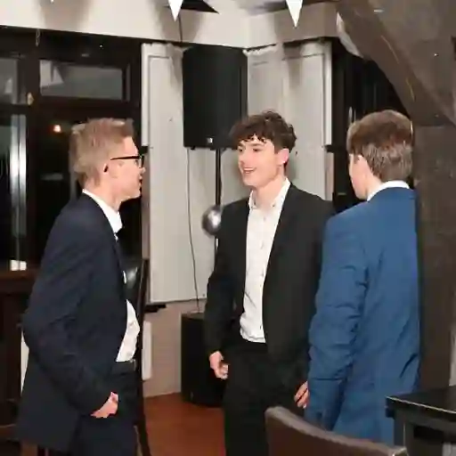
GOONEN IN LEUVEN
EVENT
19/02/2026 - 20/02/2026
Info
- Blijven slapen
- fix je eigen matras
Hoe laat?
16:30 of later
Waar?
Tibo's gooncave in Leuven
update gaga files
GAGISTAN REPUBLIC
18/02/2026
Na een lange en heftige discussie is er beslist om de gaga files op 28/02/2026 vrij te geven. Hopelijk zal hierdoor de chaos stoppen en de vrede terugkeren.
Ander nieuws: Bompa agressief 2.0?
Ondertussen heeft iedereen wel vernomen dat bompa warre terug op het nieuws te zien is, door zijn roekeloze acties. Warre wil namelijk de release van de files en zo te zien is hij daarvoor bereid om zich tegen de staat te keren. Hier een bericht aan warre: Neem je pillen en doe rustig.
GEZOCHT: Psychiater
Sander
18/02/2026
Er is net een nieuw parlement gevormd en er lijken wel wat spanningen te zijn. Vooral Bompa Warre is compleet doorgeslagen. Hij wil namelijk de Gaga files hebben en spreekt zogezegd over vriendjespolitiek in deze staat. Daarom hopen we met deze oproep een psychiater te vinden die Warre weer rustig kan krijgen
Vorming van nieuw parlement.
GAGISTAN REPUBLIC
18/02/2026
Zonet is de nieuwe regering van Gagistan gevormd. Door een hervorming heeft de dictator beslist om het totalitair regime af te schaffen een een communistische partij op te richten met de volgende nieuwe partijleden: Anthony, Dries en Mathias. Dit heeft niks met vriendjes politiek te maken. De acties en reacties van alle mensen zijn geanaliseerd en deze mensen leken het best vertrouwbaar. Deze mensen zullen ook het macht van beheerders krijgen. Zo hopen we Gagistan eerlijker te maken.
En wat over de protesten?
Er zijn enkele moedige mensen die durven te protesteren tegen de staat. Dit gaat allemaal om de gaga files. Een strikt geheim document dat zelfs als staatsgeheim beschouwd wordt. Daarom zullen die files niet snel online komen. Hopelijk is dit begrijpelijk en zullen de protesten stoppen. Zoniet, dan zal elke maatregelen genomen worden om dit tegen te werken.
Bompa nog steeds agressief
Mathias
18/02/2026
Na dat de gaga files niet zijn uitgekomen is bompa warre niet blij en hij laat dit duidelijk weten. De bompa scheld het regime weer uit en komt terug in opstand dit keer nog heftiger, onze leider reageert er rustig op en probeert het cool te houden, maar de bompa trekt er zich niks van aan.
Leider van gagistan word bedreigd
Mathias
17/02/2026
Onlangs werd Tibo terug gevonden maar de pret duurde niet lang toen hij er achter kwam dat de gaga files worden uitgesteld. Hij bedreigd onze leider met deze woorden "vanaf vandaag elke dag da de files ni release is een extra steek" dit kan zorgen voor opstanden. De leider blijft onder de druk toch rustig, maar het kan wel voor gevaarlijke situaties zorgen.
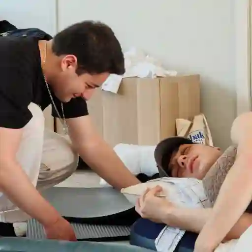
Tibo wordt wakker uit lange coma
Anthony
17/02/2026
Tibo werd vandaag wakker uit zijn coma die enkele dagen duurde. Hij heeft ook vandaag pas ontdekt dat Gagistan NEWS bestaat.
De gaga files
Hij begon ook plots over de gaga files die morgen gereleased zouden worden. Iedereen weet dat dit ondertussen al oud nieuws is. We hopen dat Tibo snel zijn achterstand inhaalt.
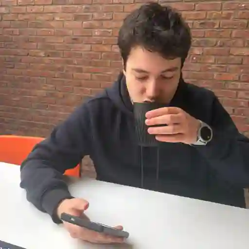
Leider drinkt kapitalistische koffie
Jarne
17/02/2026
Vanmiddag is onze leider gespot met een tas koffie, deze tas bleek onderdeel te zijn van een kapitalistische organisatie die de tassen uitleent om koffie te verkopen.
Is onze leider dan kapitalist?
Nee, dat is onwaarschijnlijk. Hij was gewoon het gagistan news aan het lezen met een tasje koffie.
Wat moet er veranderen?
Er moet een nieuwe communistische koffie komen. Het is schandalig en onacceptabel dat er enkel kapitalisme heerst in de koffiemarkt. De Gagistaanse Geheime Dienst heeft ondertussen al alle CEOs van de grote koffiebedrijven opgepakt en naar de gulag gestuurd. Meer nieuws over dit onderwerp volgt later.
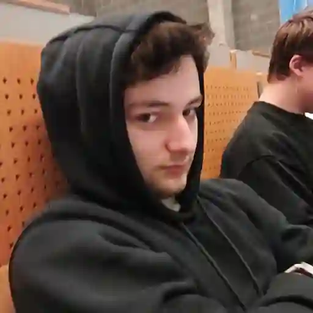
Gagik mist Aurelie
Anthony
17/02/2026
We hebben recent vernomen dat Aurelie van school is verandert en Gagik dus niet meer zal zien. Zoals we allemaal weten heeft Gagik een enorme crush op Aurelie. Zoals je kan zien is onze leider in een depressie gegaan. We wensen hem veel beterschap
Tibo veilig en wel teruggevonden.
GAGISTAN REPUBLIC
17/02/2026
Vanochtend heeft de ex-gagistanist Tibo zich terug vrijwillig gevoegd aan de unie. Op de nacht van 16 op 17 februari werd tibo terug gevonden. We zijn blij dat tibo nu in veilige handen is. Na een zoektocht enkele dagen is het gelukt.
Gagik kan geen nederlandsGagik staart naar meisje's in de aula
Anthony
16/02/2026
Vandaag zijn mathias en ik naar campus Middelheim getrokken van Universiteit Gagistan om een les mee te volgen van onze dictator Gagik en zijn onderdaan Jarne.
Staar gedrag
Het viel ons op dat gagik steeds met een geile blik naar de meisje's aan het staren was in de aula. Gagik moet veel moeite doen om zijn hormonen onder druk te houden. In het midden van de les ging hij ook plots naar de WC, we vermoeden dat hij zichzelf was gaan ontlossen.
Sander bang van spookjes
Jarne
15/02/2026
Sander (18) is bang om alleen thuis te zijn. Volgens zijn familie zou hij bang zijn voor het spook Gerard (139) die in zijn huis zou verblijven. Volgens Sander’s buurman zou er een nieuw jonger spookje Lisa (6) in zijn huis leven en zou Sander daar extra bang voor zijn. Dit is echter niet geloofwaardig aangezien zijn studies erop wijzen dat hij graag kleine kindjes betast in zijn vrije tijd
Wat is er dan wel aan de hand?
Volgens de lokale monster hunters zou er mogelijks een gevaarlijk monster onder Sander zijn bed kunnen zitten. Sommige buurtbewoners denken dat gaat om het koekjesmonster, maar dit is echter onwaarschijnlijk omdat het koekjesmonster het vaakst voorkomt in huizen van fatties met veel koekjes. Daarom onderzoekt de Gagistaanse Monster Bestrijdingsdienst (GMB) het huis van Ruben.
Is warre in gevaar?
Nee, dit is onwaarschijnlijk. Recent onderzoek toont aan dat het koekjesmonster slimmer wordt, en dus ook door heeft dat de koekjestrommel van bompa Warre (80) niet gevuld is met koekjes, maar met naalden en wol voor te breien.
Conclusie
We moeten voorlopig nog niet bang zijn. Het lijkt erop dat het om een vals alarm gaat. Andere soorten monsters komen niet vaak voor in ons land. En sander is zeker niet bang van kleine kindjes, daar zijn we zeker van!
Website update
GAGISTAN REPUBLIC
15/02/2026
Dag gagistanen, nadat we lang aan de Gagistan NEWS site hebben gewerkt is ons tech bedrijf klaar om te beginnen aan de "quotes" pagina van de gagistan website. We hopen dat we deze pagina tegen eind februari kunnen openen.
Wat betekent dit voor ons?
We hopen hiermee dat we meer gagistaanse geschiedenis kunnen preserveren voor onze toekomstige generatie.
SANDER DOOR HET DOLLE HEEN DOOR SNEEUW
Ruben
15/02/2026
Sander is vandaag compleet door het dolle heen omdat het sneeuwt. Zodra hij één vlok zag, begon hij te roepen:
“DIT IS MAGIE! DIT IS POEDERSUIKER UIT DE HEMEL!”
Hij rende naar buiten alsof hij een kind van 6 was en probeerde letterlijk elke sneeuwvlok persoonlijk te begroeten.
Maar er is een tweede probleem…
Sander vertelt ook elke dag een Weetje van de Dag, zonder waarschuwing.
In de winkel:
“Wist je dat sneeuw eigenlijk bevroren wolken zijn?”
In de klas:
“Wist je dat ik nog blijer word als het blijft liggen?”
De regering denkt eraan om een “Weetjes-knop” uit te vinden om hem even op pauze te zetten, maar Sander blijft vrolijk:
“Tot morgen! En vergeet niet… sneeuw is geluk in vaste vorm!”
AI-generated contentTibo vermist.
GAGISTAN REPUBLIC
15/02/2026
Het is al meer dan 72u dat tibo vermist is. Zijn laatste bericht ging nog over de discussie in een eerdere nieuwbericht. Sindsdien heeft hij zichzelf uit de unie getrokken. En zo uit de unie gestapt. Na zijn gagexit heeft hij niks meer van zich laten horen. Ondertussen zijn er al zoekacties bezig. Maar dit met weinig resultaat.
Wat was de reden?
De aanleiding van deze gebeurtenis gaat enkele dagen terug, toen tibo zijn onbegrijpelijke uitspraken deed, en vijandig was. Toen werd er ook bevestigd dat hij onder invloed was.
Wat nu?
De zoekacties zullen nog zeker een week duren. Daarna zal er een tijdelijke stop komen om meer informatie te verzamelen, daarna zullen de detectiven verder gaan met het onderzoek en het zoekveld vergroten. Zo hopen we tibo (levend) terug te vinden.
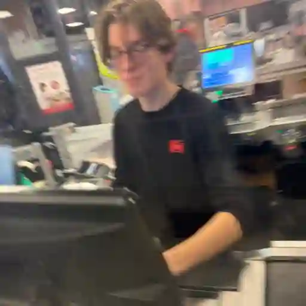
Gitte noemt Dries "ne voze"
Mathias
15/02/2026
Wat was de aanleiding tot dit?
Dries antwoordde op een Instagram bericht van Gitte met "is jouw neef nog singel, hij is echt ma ECHT zo knap!!" Ze kon er niet mee lachen en zei "wat ne voze".
ANNOUNCEMENT: Artikel van de maand
GAGISTAN REPUBLIC
14/02/2026
Met trots introduceert het machtige Gagistan een nieuwe maandelijkse traditie aan. De zogeheten "Artikel van de maand". Maar dit is niet zomaar een traditie. Op elke laatste dag van de maand zal er in de avond het artikel van de maand bekend gemaakt worden. Daar hangt ook een kleine beloning aan.
Wat als jou artikel verkozen wordt?
Als jij de gelukkige winnaar bent zal jij een exclusieve GOLD TAG krijgen gedurende deze maand.
(En die persoon zal ook de maand erop niet bespioneert worden door de geheime dienst.)
Dries neemt rest day
Jarne
14/02/2026
Een betrouwbare bron wist ons vanmiddag te melden dat Dries (aka. Larry) 2 dagen na elkaar rest day zou namen. Dit is ongezien en absoluut onacceptabel voor zijn progressie. Uit recent nieuws is gebleken dat dries mini abs heeft, dit wordt helaas oud nieuws.
Wat ging er mis?
Vermoedelijk is Dries aan het veranderen in een luie jongen, dit is een normale fase tijdens het gym tijdperk maar dit kan ernstige gevolgen hebben! Door recent onderzoek blijkt dat dries niet zomaar een ‘normale rest day’ pakt maar dat hij het volledig aan het opgeven is. “Het is zelfs zo ver gekomen dat hij geen glutes getraind heeft” - een onbekende toeschouwer.
*Wat zal er nu met hem gebeuren?
Wat het resultaat van deze gebeurtenis zal zijn is nog onduidelijk. Het onderzoek loopt nog volop door. Geruchten zeggen dat het mogelijk is dat Dries zal stoppen met glutes trainen of misschien zelfs zijn gym abonnement zal opzeggen. Deze info hebben we helaas nog niet kunnen bevestigen.
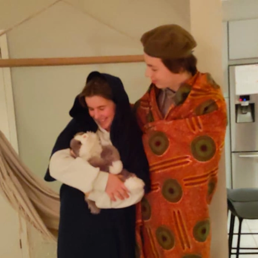
Valentijnsdag
Mathias
14/02/2026
Iedereen beleeft Valentijn anders het kan en dag van verdriet zijn maar ook vol plezier.
Onze koppeltjes:
Door recente bekendmaking weten we dat goblijn (jarne) sander helemaal niet gevraagd heeft voor Valentijn, Sander zijn hart is hier door gebroken en wilt door deze gebeurtenis geen contact meer met jarne voor een tijdje. Daarintegen weten we dat bompa warre en maria vanavond bij elkaar zijn en dat ze morgen gezellig iets gaan eten, Dries en Mathias gaan deze avond nog op date en een lekker drankje naar binnen werken. Over onze leider en Anthony hebben we niets gehoord maar daar speelt zeker iets tussen die 2, we hopen later vandaag hier nog een reactie van te krijgen. Tibo(ex-gagistanist) heeft ook een vriendin maar hij wilde de vragen van de journalist niet beantwoorden en zei "geen commentaar alstublieft" dit vinden we erg jammer.
De singels:
Over Ruben hebben niets gehoord maar we denken dat hij vanavond wel gaat gymen en erna eventjes met cooper gaat spelen.
Gehuwden:
De enigste die gehuwd is is Amelie aan de alcohol, dit gaf ze vrij snel toe.
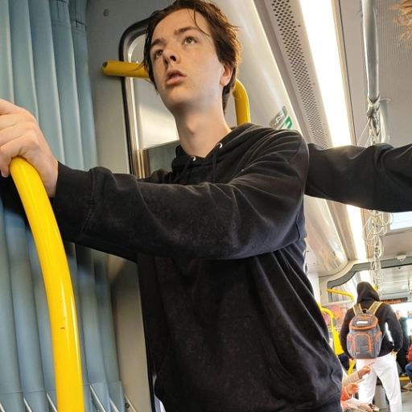
Breaking: Bompa aggressief
Mathias
14/02/2026
Door recent nieuws dat naar buiten is gekomen van de overheid is bompa warre niet blij, hij laat duidelijk van zich horen door f*ck you tegen de overheid te zeggen en te protesteren tegen de uitstel van de gaga files.
Hoe kwam dit tot stand?
Door recent onderzoek blijkt het dat bompa warre soms sukkelt met aggressie dat uit het niets naar boven komt dit kan in de toekomst zorgen voor nog meer problemen.
Wat zijn de gevolgen van deze agressie?
De overheid heeft nog niks beslist maar ze laten duidelijk weten dat alles nog word besproken van wat er in het nieuws was verteld, er kunnen wel gevolgen komen voor de bompa die te hard protesteert.
Wekelijkse update
UPDATE
14/02/2026
Bestuursvorm wijziging?
In het parlement is een nieuwe discussie. Het zou gaan over de vrijheid van het volk, concreet gezegd zou het gaan over enkele leden terug beheerder te maken. Dit is nog niet zeker maar het is wel een idee waar nog over gediscussieerd wordt. Er wordt gezegd dat als er meer vrijheid wordt gegeven aan het volk, er misbruik van gemaakt wordt, en dat er chaos uitbreekt. Zoals de laatste revolutie in 2024. Daarom zullen er waarschijnlijk enkele mensen beheerders worden, en zo een nieuw parlement vormen. Verder in de week zal er een update hierop zijn
Gaga files.
Na een lange discussie in het parlement is er toch een akkoord over het uitstellen van de release. Dat is gisteravond besloten.
Volgens de oveheid zal de release met zeker nog een week uitgesteld worden. Zegt de dictator. De oorzaak is nog onbekend, het zou gaan over het verder censureren van de inhoud.
Nieuwe functie in Gagistan site.
Door het tech bedrijf van Anthony is het ook mogelijk om belangrijke events te posten bij de nieuwspagina's. Vergeet dat zeker niet te doen.
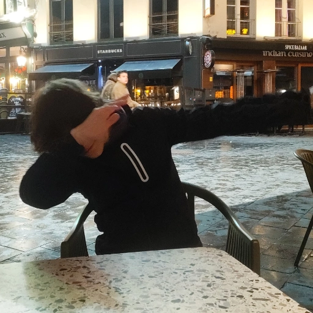
Jarne vast in de tijd
Sander
14/02/2026
Uit recente foto’s is gebleken dat Goblijn Jarne stilstaat in de tijd. Er is namelijk ontdekt dat hij de dab heeft gedaan. In het journaal van 19u volgt een live interview met zijn reactie hierover.
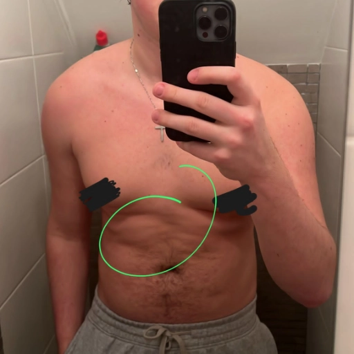
Ruben(niet de echte batman) is geschokeerd
Mathias & warre
14/02/2026
Ruben stuurde onlangs in de republiek van gagistan dat hij geschokeerd was dat er veel artikels waren. Dit is duidelijk een teken dat Ruben het belangrijke Gagistan nieuws toch niet zo belangrijk vindt. Dit zijn de eerste tekenen van de ontrouw van Ruben aan de Unie.
Hoe had dit kunnen gebeuren?
Ruben was waarschijnlijk te druk met spiegel foto's te trekken en met het uitkakken van andere mensen, mogelijk was hij ook bezig met het agressief en geweldadig spelen met zijn banaan.
Wat zijn de gevolgen hier van?
Als dit zo blijft doorgaan en Ruben niks veranderd aan zijn asociaal gedrag zal de raad van gagistan nog is moeten samen komen over dit geval.
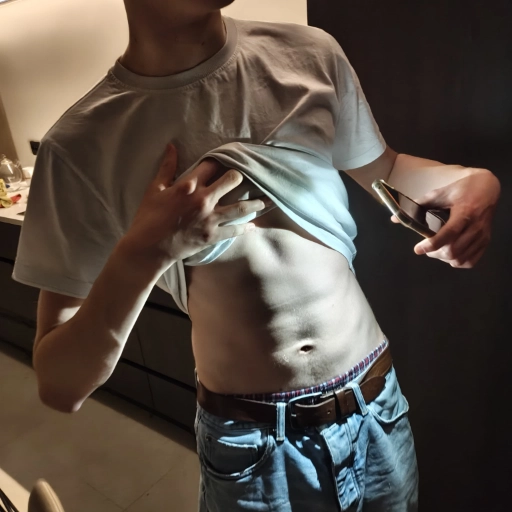
Bergtrol maakt recovery
Anthony
14/02/2026
Dries is een bekende bergtrol die door de staat van gagistan werd geadopteerd. Hij werd ongeveer 5 jaar geleden door enkele gagistani's gevonden in een diepe donkere put in de bergen van Kenya.
"We zijn super trots op hem"
Zijn verzorger heeft recent beelden gedeeld van zijn gains. Ooit was hij een uitgehongerde bergtrol in een put en nu is hij aan zijn six-pack aan het werken in de Gagic-fit. We zijn allemaal enorm trots op onze bergtrol.❤️
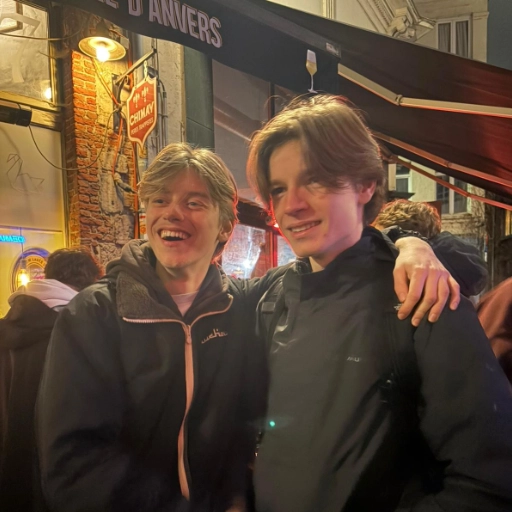
Dries x Dries
Jarne
13/02/2026
Vandaag is een onvergetelijk moment hebeurd, hier in antwerpen bij café de zwaan is dries de enige echte dries tegen gekomen.
Wat een onvergetelijk moment. Iedeteen is in euforie, niemand had hier zelfs van kunnen dromen. Dit is een once in a lifetime event, zoiets zal nooit meer opnieuw gebeuren. Geniet ervan zoalg het nog kan!
Stront zat generated content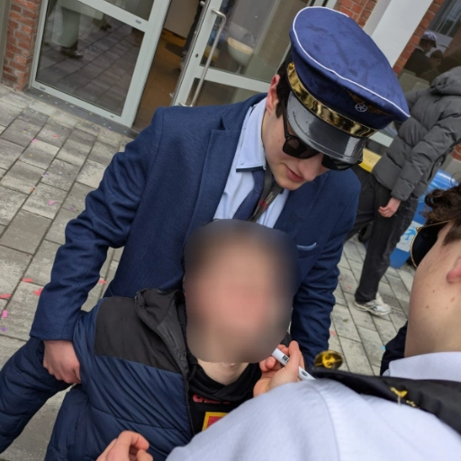
Immigratie dienst grijpt weer in
GAGISTAN REPUBLIC
12/02/2026
De nationale immigratie dienst ook wel bekend als immigration gaga enforcement (IGE) is recentelijk terug begonnen met het oppakken en deporteren van illegale immigranten. IGE zegt het volgende: "Nu zijn we bezig met het opsporen van Goblijn jarne."
Waarom doet IGE dit?
Volgens de organisatie wil het zo het land terug veiliger maken, ondanks de kritiek en druk op IGE zullen de arrestaties voorlopig nog niet stoppen. Veel mensen zeggen dat de arrestaties op een oneerlijke en gewelddadige manier verlopen. Daarom waren er protesten. De protesten zijn inmiddels gestopt nadat de leider van de protesten op mysterieuze wijze is verdwenen en nooit meer gezien. Tot zo ver voor vandaag.
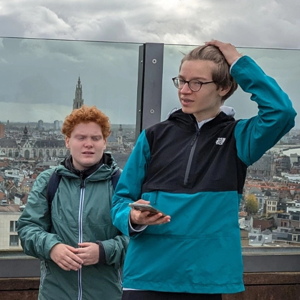
Dries samen met Charlotte?
Warre
12/02/2026
Er is zonet een nieuwe foto publiekelijk gemaakt in het Gagistan. Onderdaan Dries is samen verschenen op een foto met een zekere Charlotte. Het feit dat deze samen op een foto staan suggereert misschien een diepere relatie? Charlotte heeft eerdere ervaringen met het veranderen van zowel geslacht als interesse in Dries. Dries zat al eerder 2 jaar met Charlotte lang in eenzelfde klas. Of dit meer is dan enkel een vriendschappelijke relatie lijkt van niet. Onze leider Gagik hoopt op een diepere band tussen deze 2 zodat de populatie van Gagistan kan blijven vergroten.
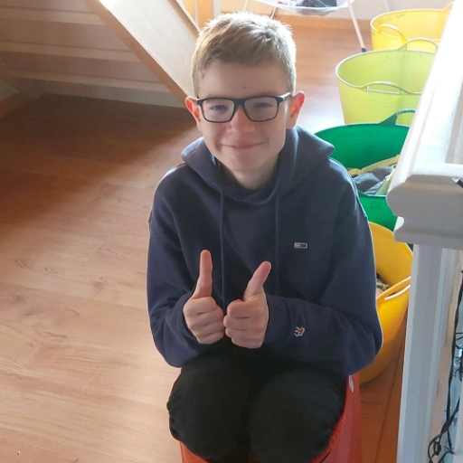
BELANGRIJK NIEUWS, opgepast voor deze bergtroll
GAGISTAN REPUBLIC
12/02/2026
Gagistani gezondheidsorganisatie (GGO) Waarshuwt. Dries heeft mogelijk HIV omdat hij gekust zou hebben met een neger. Er is gebleken dat dries waarschijnlijk HIV zou hebben door een zwarte. Vermoedelijk ook seksueel contact. Nu ligt Dries in het ziekenhuis wachtend op de testresultaten.
Is dit een probleem?
Er is geen reden tot paniek als u geen fysiek contact hebt gehad met dries, is dat wel zo? Dan moet u zo spoedig mogelijk naar het ziekenhuis voor een test. Het is belangrijk om de maatregelen te volgen om een mogelijke epidemie te voorkomen.
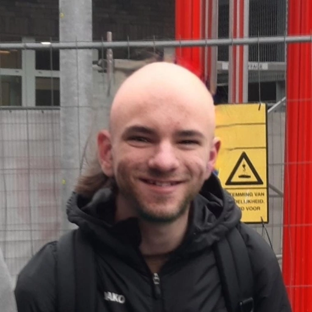
BREAKING NEWS: Jarne is kaal
Warre
12/02/2026
Ons is zonet vernomen dat Jarne, aka de goblin, kaal is gegaan. Deze foto is zonet publiekelijk gemaakt en verspreid onder het Gagistan. Onze leider zelf heeft nog niet gereageerd op dit nieuws en heeft nog geen uitspraken gedaan. Of de kleine goblin terug verbannen wordt van de Communistische Gagistan is nog niet duidelijk, maar door deze actie wordt deze kans weer groter. Wij houden jullie op de hoogte van de losgeslagen Goblin zijn activiteiten.
Warre heeft bicep vein
Jarne
12/02/2026
Warre heeft een klein maar veelzeggend mijlpaaltje bereikt: zijn eerste zichtbare ader op de bicep. Het is zo’n detail dat alleen gymliefhebbers meteen herkennen, maar voor hem voelt het als een stille trofee. Uren zweten, sets afwerken en niet opgeven beginnen hun sporen na te laten, letterlijk.
Bij Basic-Fit is hij ondertussen vaste klant, met een routine die steeds strakker wordt. Tussen de spiegels en het geratel van halters bouwt hij niet alleen spieren, maar ook discipline. Die ene ader is misschien klein, maar hij vertelt een groot verhaal: dit is pas het begin.
AI-generated content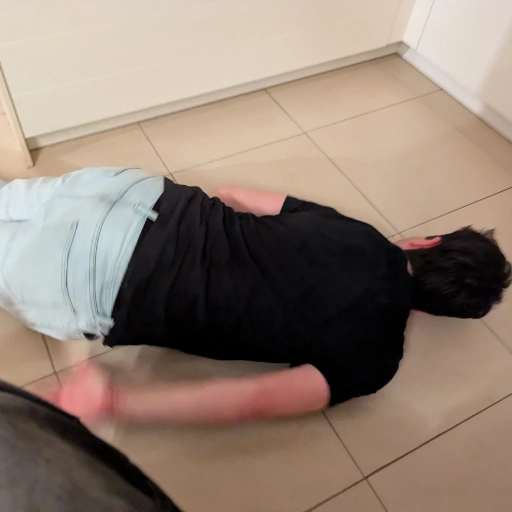
Dictator van Gagistan flikkert op zijn gezicht
Anthony
12/02/2026
Er zijn recent hilarische beelden gelekt van de Gagistaanse dictator Gagik die op zijn bakkes flikkert.
Hoe kon dit gebeuren?
Het is nog onduidelijk hoe dit kon gebeuren. We vermoeden dat onze dictator op het moment van het incident onder de invloed was.
Gelukkig heeft Gagik hier geen permanente schade van opgelopen.
Cumming or Drumming?
Warre
12/02/2026
Binnenkort kan men de eerste aflevering van het reeds succesvolle TV-programma Cumming or Drumming bekijken. Tijdens dit programma's moeten BK's (Bekende Gagistanen) raden of een willekeurige kandidaat het muziekinstrument aan het bespelen is, of dat hij net iets te veel plezier heeft op de openbare televisie. Hoe dit format de selecties en de beoordeling is doorgekomen is een groot raadsel, maar misschien is het een nieuwe manier om taboos aan het volk te brengen.
Wie doet er mee?
Wie er precies allemaal mee zal doen als kandidaat is nog niet bekend. Wel is er een stukje uit de pilotaflevering geleaked. Hier kunnen we zien dat een zekere Ruben, die overigens nog steeds op Mater zit en in contact komt met meerdere minderjarigen, de eerste testkandidaat was voor dit programma. Of er ook vrouwelijke kandidaten zullen deelnemen zal het volk van Gagistan nog moeten afwachten. Misschien kunnen de deelnames van bijvoorbeeld Noor of Fleur wel helpen met de populariteit van het programma...
“Another day, another win for the unemployed.”
Mathias
12/02/2026
Zo begon de ochtend van 12 februari, alsof het een soort motto was dat spontaan in de lucht hangt. Vandaag zouden de unemployeds(Vergrijzing, Goblijn, Dries en Mathias) zich aansluiten bij de xmos van Maria.
Hoewel ze morgen les hebben, keken ze elkaar aan met die typische blik van: “Morgen is een probleem voor morgen.” En dus besloten ze volledig unaniem en zonder enige vorm van gezond verstand om zich ladderzat te gaan zuipen.
En ergens, tussen de lege flessen drank en de halfbakken levensadviezen door, beseften ze dat dit waarschijnlijk het meest productieve was dat ze die week zouden doen.
Maar hé… another day, another win.
AI-generated contentTibo onder invloed creëert onrust
GAGISTAN REPUBLIC
12/02/2026
Op de nacht van 11 op 12 februari 2026 was er wat onrust. Kort na wat uitspraken van Tibo, hij beweerde dat hij het wist en niemand het begreep. Over wat het precies ging is nog onduidelijk. Er wordt gezegd dat het te linken was met uitspraken die leken op die van andrew tate. Volgens Tibo was zijn mindset anders omdat hij beweerde dat de anderen alleen maar depressief waren.
Oorzaak?
Verder bleek dat tibo onder invloed was van alcohol, dit verklaarde gedeeltelijk waarom hij die uitspraken deed. Zelfs tegen zijn pookie ruben had tibo een erg negatieve mening op dat moment. Later stapte tibo ook effectief uit de unie, de situatie is nu nog onstabiel. En de vraag is hoelang tibo nog uit de unie zal blijven
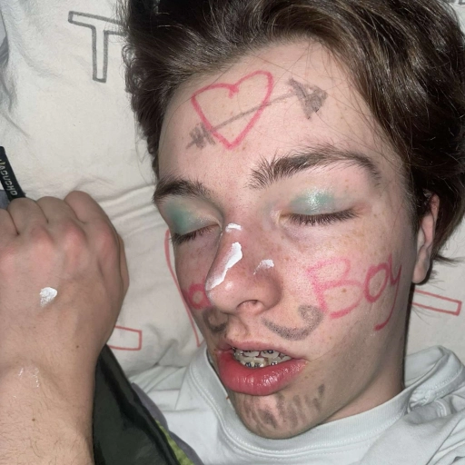
Bompa Warre gaat met pensioen na zware val
Ruben
12/02/2026
Eind vorige week is de 67-jarige Warre Jozef De Jean ten val gekomen in zijn woning onder de Noorderlaanbrug. Bij het ongeluk brak hij zijn heup en liep hij ook meerdere andere botbreuken op.
Na lang overleg met zijn echtgenote, Edelvrouw Maria, heeft het koppel besloten zich terug te trekken naar Bethlehem om daar van een welverdiend pensioen te genieten.
Het nieuws heeft heel wat mensen geschokt, vooral zijn trouwe aanhangers Sander en Dries reageren aangeslagen.
Warre stond in zijn jongere jaren bekend om zijn sterke drinkcapaciteiten. Maria vertelde hierover met een glimlach:
“Ja, hij kon er wat van. De bar zag hem graag binnenwandelen, maar ook weer buiten, want hoe hij zoveel dronk, mag Joost weten.”
Vrienden en familie hopen nu vooral op een spoedig herstel en een rustige toekomst voor het koppel.
AI-assisted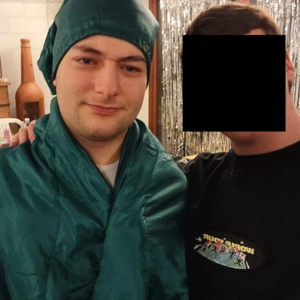
Gaga files worden vrijgegeven op 18/2!
Warre
12/02/2026
"Gaga files voor GTA 6"
Ons is zonet vernomen dat de Gaga Files, niet te verWARREn met de Epstein Files, binnenkort aan het licht zullen komen. De voorlopige datum staat vast op 18 februari. Of de files volledig zullen vrijgegeven worden, of er slechts een deel publiekelijk wordt gemaakt zullen we nog moeten afwachten.
"Onder hoge druk"
Hoogstwaarschijnlijk is deze actie een gevolg van hoge druk die er ligt. De inhoud van deze files zijn tot heden namelijk strikt geheim gehouden. Na vele protesten van onderandere Warre, zal heerser Gagik binnenkort de sleutel tot de waarheid overbrengen.
"Inhoud van de Gaga Files"
Wat er precies in de Files staat is voorlopig nog zeer onduidelijk. Misschien gaat het over geheime relaties van onze heerser Gaga, of misschien bevatten ze wel een sekstape van Ashot of van onze heerser zelf. Ook kan men privé gesprekken tussen de heerser en andere machtige collega's verwachten. Of de heerser zelf blij is met het uitkomen van deze informatie is voorlopig nog niet bekend.
Wij komen binnenkort terug wanneer er meer info beschikbaar is...
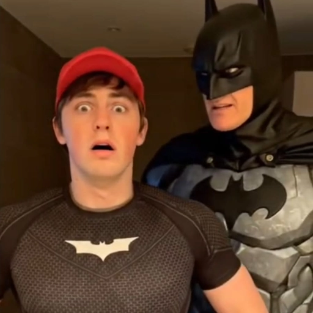
Ruben blijkt toch niet de echte Batman te zijn
GAGISTAN REPUBLIC
11/02/2026
Na uitgebreid onderzoek is toch gebleken dat de 18-jarige ruben niet de echte Batman is. Er waren al veel verdenkingen en beschuldigingen dat ruben zich enkel voordeed als Batman. Maar dit veranderde allemaal na een opvallende fragment dat enkele dagen geleden opdook. Na uitgebreid onderzoek door de gagistani geheime dienst (GGD) kwam de waarheid naar boven.
Hoe is dit kunnen gebeuren?
De oorzaak van het incident is nog onduidelijk, hoewel er wel theorieën zijn die een mogelijke oorzaken zouden hebben, voorlopig wordt er aangenomen dat dit slechts om een flauwe grap ging. Het parket onderzoekt dit nog.
Goblijn Jarne eindelijk terug in zijn koboltenhut
Ruben
11/02/2026
KOBOLTENBOS – Na een mysterieuze verdwijning van enkele weken is de jongen-goblijn Jarne eindelijk teruggekeerd naar zijn vertrouwde koboltenhut, diep verscholen tussen de bomen van het Koboltenbos.
De lokale kobolten maakten zich al zorgen en dachten dat hij misschien verdwaald was tijdens een avontuur.
“De hut voelde leeg zonder hem,” vertelt Kobolt Krik. “We zijn blij dat hij terug is.”
Jarne zelf wil nog niet veel kwijt over waar hij geweest is, maar hij liet weten opgelucht te zijn weer thuis te zijn. De kobolten plannen een klein feest met slakkenkoekjes en vuurvlieglichtjes om zijn terugkeer te vieren.
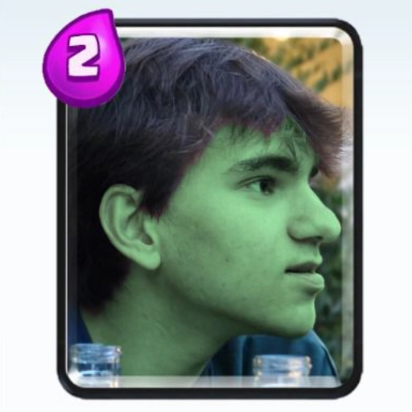
BREAKING: JARNE DE GOBLIN IS TERUGGEKEERD!
GAGISTAN REPUBLIC
11/02/2026
Na een eindeloze hoop gesmeek van Sander is de staatsgoblin Jarne toch teruggekeerd tot het Gagistaanse Republiek.
"achtergelaten"
Het republiek had met democratie besloten dat we Jarne moesten "achterlaten in 2025". Dit was succesvol voor de eerste 2 maanden. Maar toen werd het te veel voor onze goblin. Jarne's boyfriend, Sander begon namelijk heel hard te "bitchen" over de onrechtvaardigheid tegenover de goblin. Dit raakte het hart van het Gagistaanse volk. Dus na een democratische verkiezing hebben we besloten om Jarne terug op te halen uit 2025.
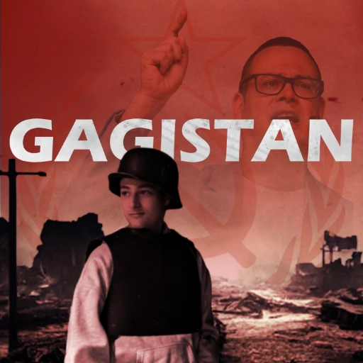
Welkom bij GAGISTAN NEWS!
GAGISTAN REPUBLIC
11/02/2026
de dictator, heeft samen met het tech bedrijf GAGISTAN NEWS opgericht
GAGISTAN NEWS
Alle belangrijke evenementen en gebeurtenissen zul je nu sneller kunnen zien dankzij de oprichting van het nieuwskanaal "GAGISTAN NEWS"
Het parlement heeft een akkoord bereikt om nu ook een eigen nieuwskanaal te openen. Zo wil de overheid sneller betrouwbaar informatie publiceren. Niet alleen de overheid maar ook andere mensen kunnen nieuws plaatsen na een controle door het tech bedrijf van Anthony. Op deze manier zal de informatie betrouwbaar zijn.